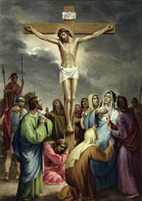

XII. állomás: Jézust meghal a kereszten

"Atyám, bocsáss meg nekik, mert nem tudják, mit cselekszenek" (Lk 23,34). Krisztus szenvedésének csúcsán sem feledkezik meg az emberről, különösképpen nem azokról, akik közvetlen okai a szenvedésének. Tudja, hogy az embernek, jobban mint minden más dologra, szüksége van a szeretetre; szüksége van az irgalomra, amely ebben a pillanatban kiterjed az egész világra. "Bizony mondom neked, ma velem leszel a paradicsomban" (Lk 23,43). Így felel Jézus annak a gonosztevőnek, aki a jobbján függ és kéri őt: "Jézus, emlékezzél meg rólam, amikor országodba érkezel" (Lk 23,42). Egy új élet ígérete. Ez Jézus szenvedésének és közeli halálának első gyümölcse. A reménység szava az emberhez. A kereszt tövében ott állt Mária, mellette a tanítvány, János evangélista. Jézus ezt mondta: "Asszony, íme a te fiad!, és a tanítványnak: Íme, a te anyád! S attól kezdve a tanítvány a házába fogadta őt" (Jn 19,26-27). Ez a végrendelete azoknak, akik szívének a legkedvesebbek. Végrendelet az Egyháznak. A haldokló Jézus azt akarja, hogy Mária anyai szeretete átölelje mindazokat, akikért ő az életét adja, az egész emberiséget. Rögtön utána Jézus felkiáltott: "Szomjúhozom!" (Jn 19,28) Kihallatszik ebből az a szörnyen tikkasztó elepedés, amely szinte égeti az egész testét. E szavak fizikai szenvedését fejezik ki. Azután hozzáteszi Jézus: "Istenem, Istenem, miért hagytál el engem?" (Mt 27,46; vö. Zsolt 21(22),2) Ezek annak a zsoltárnak a szavai, amelyekkel imádkozik. A mondat, hangfekvése ellenére, egyértelművé teszi az Atyával való mélységes egységét. Földi életének utolsó pillanataiban Jézus az Atyához irányítja gondolatát. A párbeszéd immár csak a haldokló Fiú és az Atya között zajlik, aki elfogadja szeretetáldozatát. Amikor elérkezik a kilencedik óra, Jézus felkiált: "Beteljesedett!" (Jn 19,30) Íme, elérkezett a megváltás művének beteljesedése. A küldetés, amelyért a földre jött, elérte célját. A többi az Atyára tartozik: "Atyám, kezedbe ajánlom az én lelkemet" (Lk 3,46). Amikor ezt kimondta, kilehelte lelkét. "A templom függönye kettészakadt..." (Mt 27,51) A jeruzsálemi templomban a "szentek szentje" megnyílt abban a pillanatban, amikor az új és örök szövetség Főpapja belépett oda.
Úr Jézus Krisztus, te amikor agóniád idején sem maradtál közömbös az ember sorsa iránt, és utolsó leheleteddel rábíztad az Atya irgalmasságára minden idők férfiait és asszonyait, gyengeségeikkel és bűneikkel együtt, tölts el minket és a jövendő nemzedékeket a szeretet Lelkével, hogy közömbösségünk ne tegye üressé bennünk halálod gyümölcseit. Neked, keresztrefeszített Jézus, Isten bölcsessége és ereje, tisztelet és dicsőség mindörökkön örökké. Amen.